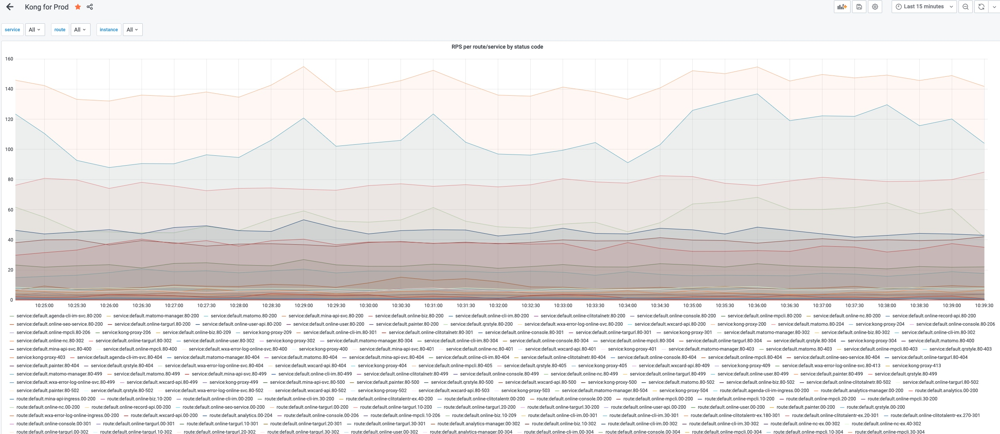
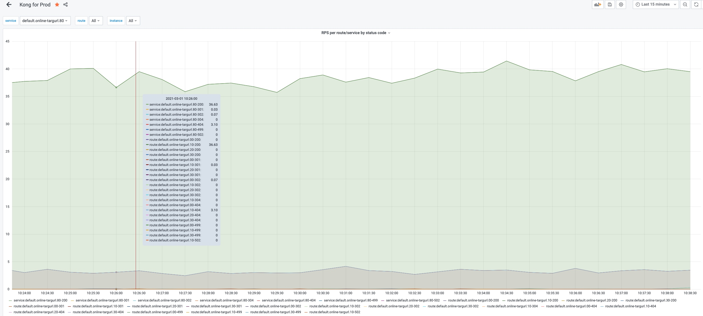
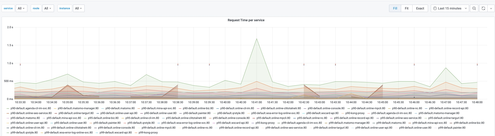
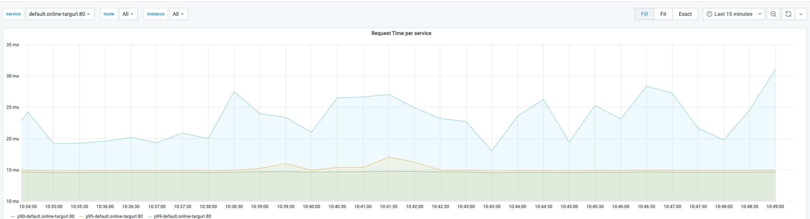
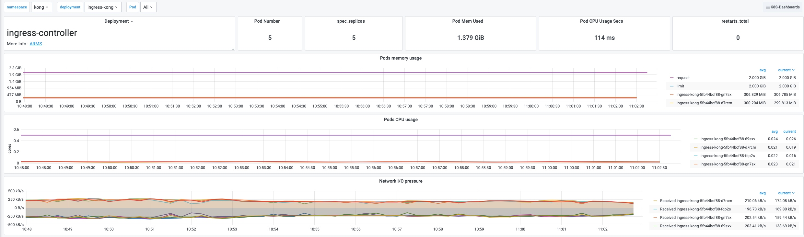
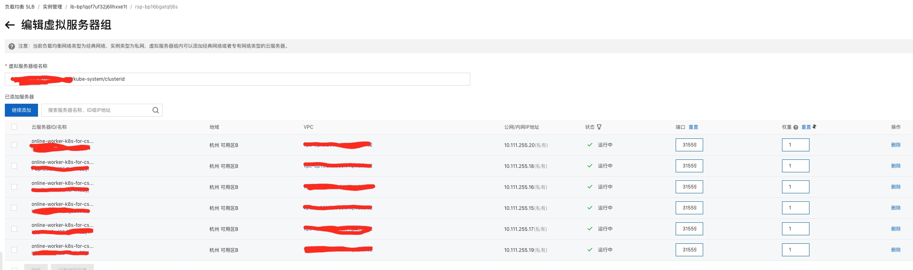
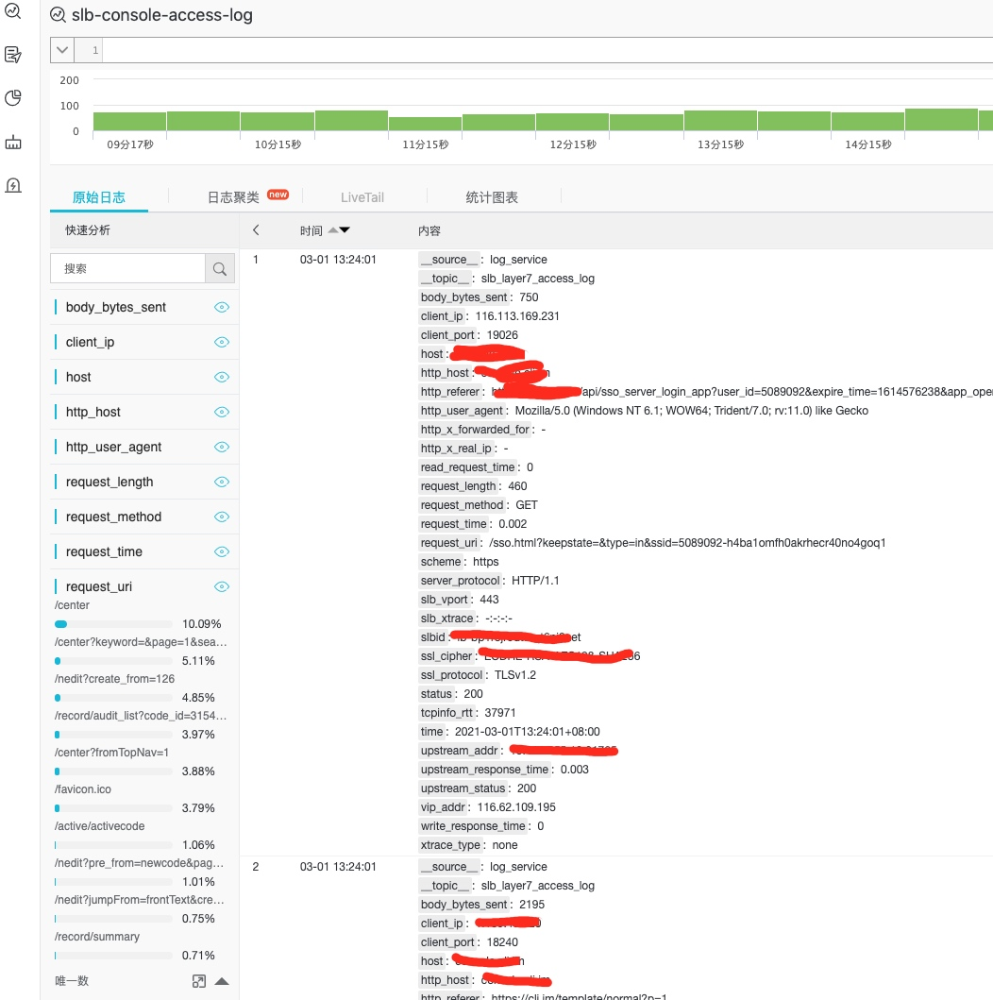

经过前面一系列的介绍，我们已经在阿里云的 K8s 集群上搭起了一套 Kong 网关，并通过平滑的迁移，将老架构中的服务逐步迁了过来，接下来就是考虑如何高效运维的思考了。
运维包括服务的监控和报警，Kong 网关的日常管理操作，K8s 的日常操作（可能也会对 Kong 有影响），甚至如何结合阿里云这个平台，已达到简单高效的目的。
整体业务与个体请求监控
根据：请求返回
通过 Kong 网关监控大盘，我们可以看到整体请求处理详情。在这个基础上，可以尝试做一个请求正常处理（2xx 返回）或异常处理（5xx 返回）百分比。

针对部分核心服务，根据请求返回施加报警，比如说请求正常处理（2xx 返回）百分比低于 99%时 触发告警，请求异常处理（5xx 返回）百分比高于 1% 时触发告警等。

根据：请求时延


针对部分核心服务，根据请求时延施加报警，比如说上图中的服务响应时间平时是 50ms 以下，我们可以设置一个 p95 线 500ms 时延的报警，当请求时延明显高于平常，很可能已经出现了问题，这个有助于我们提前发现问题。
Kong 网关资源占用
一般 K8s 集群都会有节点的资源使用告警（CPU, 内存，磁盘等）和 Pod 资源使用告警（CPU，内存等）。Kong 网关也是以 Pod 形式运行，只要合理配置 CPU 和内存规格即可，报警可以参照集群默认告警。另外，因为 Kong 作为网关，是整个集群服务流量的进出口，因此也需要配置进出流量的监控。譬如说预防单个服务异常大流量打满带宽，导致其他正常服务受影响。

个别服务独占 SLB
业务服务通过 域名 -> SLB -> K8s Kong 网关，网关是共享的，但是 SLB 可以是共享也可以是独立的。
推荐，重要服务独占 SLB，方便控制 SLB 的规格，也方便管理（日志采集，日志分析）。次要服务共享 SLB，共享规格，减少成本和数量。
注：关于 SLB 的建立详见上一篇。
K8s 日常操作对 Kong 网关的影响
注：这里我们假设 Kong 网关是以 Deployment 的形式部署的。
参照之前 “保留源 IP” 功能的要求，所有 K8s 节点作为 SLB 的后端承载者，所有节点上都要部署 Kong 网关节点。综上，我们操作节点时，就会涉及到 Kong 网关实例。下面我们以重启节点为例：
问题#1：重启节点前，必须先迁移走所有实例 Pod。而迁移 Kong Pod 时，则优先需要摘除网关流量。如何在摘除 SLB 转发到某节点的流量？
阿里云里对应 K8s 的 SLB 是通过虚拟服务器组找到后端承载实例，如下图

一种简单的办法是手动调整权重，待整个操作结束后在恢复权重，但这个方法在流程上不是很搭。
另外我推荐的办法是：自动移除SLB后端unschedulable状态的节点。
- kubectl cordon与kubectl drain命令会将节点置为unschedulable状态，默认service.beta.kubernetes.io/alibaba-cloud-loadbalancer-remove-unscheduled-backend的取值为off，此时不会将处于unschedulable状态的节点从SLB的后端服务器组移除。
- 若需要从SLB的后端服务器组移除unschedulable状态的节点，请将service.beta.kubernetes.io/alibaba-cloud-loadbalancer-remove-unscheduled-backend的的取值设置为on。
apiVersion: v1
kind: Service
metadata:
annotations:
service.beta.kubernetes.io/alibaba-cloud-loadbalancer-remove-unscheduled-backend: "on"
name: nginx
spec:
externalTrafficPolicy: Local
ports:
- name: http
port: 30080
protocol: TCP
targetPort: 80
selector:
app: nginx
type: LoadBalancer
结合 SLB 的这个特性，我们重新回到重启节点的例子中，流程为：
kubectl cordon将节点置为unschedulable状态。kubectl drain排空实例。- 重启节点。
kubectl uncordon将节点置为schedulable状态。
问题#2：扩缩节点时，要调整 Kong 网关的实例数量，即调整 Deployment 的副本数量。
问题#3：升级网关 Kong 实例。
当前请求链路是 SLB 将请求转发到各个节点上，然后各节点上的 kube-proxy 将请求转发到该节点上的 Kong 实例上。假设以下场景：当升级 Kong 网关，Kong Pod 进入滚动升级阶段，SLB 没能及时同时得知这个信息（即使 SLB 上配置健康检查，也可能会有延后现象），SLB 仍将请求转发给老版本的 Kong Pod 实例，如果此时老版本的 Kong Pod 实例正处于 Terminating 状态或者已经完全退出，那么就会出现请求无人响应的情况。
对此，我们严格意义上将升级 Kong 网关分成三步：
- 先切流，组织流量进一步进入。
- 以
Recreate的升级策略进行升级（Deployment 的升级策略分为 “Recreate” 和 “RollingUpdate”，默认为 “RollingUpdate”）。 - 恢复流量。
切流和恢复流量的方式，可通过问题#1里面的方式即可。
补充：我们期望尽量减少对网关的升级，不得已升级时，也必须做好详尽的调研和实验工作，把风险降到最低。
再补充：如果想简化操作，我建议在流量低谷执行。
业务 SLB 相关
请求日志分析
上面说了我们可以为重要的服务配置独占的 SLB，那么我推荐是 7 层的（应用层的），这样我们可以开启阿里云自带的日志分析功能。

通过简单的 query 语法，就能对业务请求有一定的了解和分析，对业务开发者而言是很有帮助的。
注：7 层的 SLB 带来的一个坏处时，统一服务的，不同域名的 HTTPS 请求，就需要多个 SLB 了。如果是 4 层的 SLB 的话，就没有这方面的问题。
业务 SLB 的监控和报警
阿里云 SLB 监控和报警参见文档即可，这里就不展开了